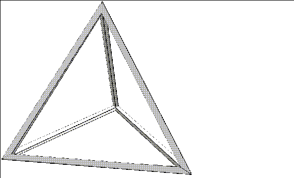
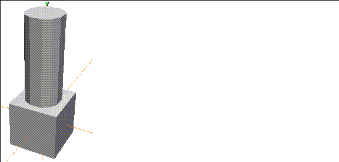

[N-World Contents] [Book Contents] [Prev] [Next] [Index]
Unmodeling
We called this chapter "Unmodeling" because it shows some techniques that you might not think of if you're used to working with other modelers. Get ready to bend your mind!
The Hollow Cube
In this exercise, we'll start with a solid cube and turn it into a "hollow" object.
1. (CLICK-L) on GeoMenus>File>New Object>Cube.
2. (SHIFT-L) on the cube, then (CLICK-R) on Select Elements.
- This selects all of the faces on the body of the tetrahedron.
3. (SHIFT-L) on the collection of faces, then (CLICK-L) on Inset.
- Enter a value of 1.
Figure 19.1 Inset the faces
4. (SHIFT-L) on the still collected faces, then (CLICK-L) on Extrude.
- Extrude the faces inward slightly, but make sure they don't overlap.
Figure 19.2 Extrude the faces inward
5. (CLICK-L) on GeoMenus>Object Display>Shading>Cube.
6. (SHIFT-L) on one of the large faces, then (CLICK-L) on Bridge.
7. Move the camera and (CLICK-L) on the opposite face.
- Your object should look like this:
Figure 19.3 After the first bridge
- Remember, however, that we now have a winged-edge model; we can't simply bridge from side to side, but must bridge the remaining faces individually.
8. On one of the remaining faces, use the Bridge operation.
- Your object should look like this:
Figure 19.4 Second side bridged
9. Repeate the Bridge command for each of the remaining three faces.
- Your finished object should look like this:
Figure 19.5 All faces bridged
Now, this looks pretty good, but we still have a little cleanup to do on the inside of the cube.
10. Turn shading for the object off.
11. Zoom the camera into the inside of the cube.
- Look at one of the joints.
12. Some of the inside edges have an extra segment, created when you bridged the faces:
Figure 19.6 Dissolving extra segments
13. (SHIFT-L) on the segment, then (CLICK-L) on Dissolve.
Figure 19.7 Dissolving extra segments
14. Cut the face created when the segment is dissolved as shown:
Figure 19.8 Cut the resulting face
15. (SHIFT-L) on the small triangular face.
Figure 19.9 Select the triangular face
16. (CLICK-L) on Collapse.
- The triangular face collapses to a point, resulting in a clean, smooth joint:
Figure 19.10 Collapsing the face
17. Repeat the cleanup process described in steps 13 through 16 for each of the remaining joints.
- Your object should look like this when completed:
Figure 19.11 The finished cube
The Hollow Pyramid
Now, let's try the same thing with a tetrahedron.
1. (CLICK-L) on GeoMenus>File>New Object>Tetrahedron.
2. (SHIFT-L) on the tetrahedron, then (CLICK-R) on Select Elements.
- This selects all of the faces on the body of the tetrahedron.
3. (SHIFT-L) on the collection of faces, then (CLICK-L) on Inset.
- Enter a value of .5.
Figure 19.1 Inset the faces
4. (SHIFT-L) on the still collected faces, then (CLICK-L) on Extrude.
- Extrude the faces inward slightly, but make sure they don't overlap.
Figure 19.2 Extrude the faces inward
5. (CLICK-L) on GeoMenus>Object Display>Shading>Tetrahedron.
6. (SHIFT-L) on one of the large triangular faces, then (CLICK-L) on Bridge.
7. Move the camera and (CLICK-L) on a second triangular face.
- Your object should look like this:
Figure 19.3 After the first bridge
8. On the remaining two sides of the pyramid, use the Bridge operation to bridge between the two faces on each side.
- Your object should look like this:
Figure 19.4 All faces bridged
Now, this looks pretty good, but we still have a little cleanup to do on the inside of the pyramid.
9. Turn shading for the object off.
10. Zoom the camera into the inside of the pyramid.
- Look at one of the joints.
11. Make the following cut by selecting the highlighted face and using the Cut command:

Figure 19.5 Cutting the inside faces
Figure 19.6 Collapse the small triangular faces
12. Repeat this modification on the inside of each joint on the pyramid.
- You should have a single vertex at the inside of each joint when you're finished:

Figure 19.7 Completed pyramid
The Dresser
This exercise demonstrates the power and flexibility of N-Geometry's winged edge database. You'll work with some unusually shaped faces and make some cuts you might not expect to be able to do.
1. (CLICK-L) on GeoMenus>File>New Object>Cube.
2. (SHIFT-L) on the front face, then (CLICK-L) on Axis Move.
- Choose the Z axis from the menu that appears, and move the face back so the cube has the basic correct dimensions of a dresser:
Figure 19.8 Cube "squashed" along the Z axis
3. Collect the segments on both sides of the front face.
Figure 19.9 Collect segments on each side of the front face
4. (SHIFT-L) on the collection, then (CLICK-M) on Cut.
- This cuts the segments into thirds.
5. (SHIFT-L) on the front face again, then (CLICK-L) on Inset.
- Specify an Inset Width of 1 in the dialog box that appears.
Figure 19.10 Inset the front face
6. (SHIFT-L) on the front face, then (CLICK-L) on Extrude.
- Move the front face back along the Z axis so that it's almost touching the back of the cube:
Figure 19.11 Extrude the front face back into the dresser
Notice that because we cut the segments on the inset face that two segments run from the front of the dresser to the back.
7. (SHIFT-L) on the inset face, then (CLICK-L) on Cut.
- Cut the inset face as shown below; you'll actually have to repeat the Cut operation to make both cuts.
Figure 19.12 Cut the inset face
Now that we've cut the inside of the dresser appropriately, we can make our shelves.
8. Collect the six segments on the inside of the dresser where the shelves should be.
Figure 19.13 Collect the segments which will form the shelves
9. (SHIFT-L) on the collection, then (CLICK-L) on Bevel.
- Enter a bevel width of .5, then (CLICK-L) on the Bevel button. The selected segments are replaced by faces:
Figure 19.14 Bevel the collected edges
10. Collect the four segments in the back corners of where the shelves should be, then (CLICK-L) on Dissolve.
Figure 19.15 Dissolve the edges shown
11. Select faces on the element sensitivity menu, then (CLICK-L) on one of the "shelf" faces.
- One of the advantages of N-Geometry's winged-edge object design is that you can have some quite unusual faces. In this case, two faces wrap all the way around the inside of the object.
Figure 19.16 Choose one of the "shelf" faces
12. Cut the face from top front vertex to top front vertex.
Figure 19.17 Choose one of the "shelf" faces
- The resulting object now looks like this:
Figure 19.18 The first cut on a shelf
13. Cut the face again, this time choosing the two vertices directly below those shown in Figure 19.17.
Figure 19.19 The generated shelf
14. Now, cut the face for the bottom shelf in the same way.
- Your object should look like this:

Figure 19.20 The main body of the dresser
Building the Drawers
Now that you have the main body of the dresser done, the rest should be easy.
15. Collect the three faces at the back of the drawer "slots."
Figure 19.21 Starting the drawers
16. (SHIFT-L) on the collection, then (CLICK-R) on Chip Off.
Figure 19.22 Naming the chipped off group of faces
- Give the chipped off group of faces a name, then (CLICK-L) on Add Object. The dialog box closes and the group of 3 faces is created; (CLICK-R) on the N-Geometry window to leave the faces where they are.
17. (SHIFT-L) on the collection of faces, then (CLICK-L) on Extrude.
- Pull the faces out toward the front of the dresser, until they're flush with the front.
Figure 19.23 Pull out the faces flush with the front of the dresser
18. Collect the faces on the top of each drawer.
Figure 19.24 Collect the faces on top of the drawers]
19. (SHIFT-L) on the collection, then (CLICK-L) on Inset.
- Specify an Inset Width of .5, then (CLICK-L) on Inset.
Figure 19.25 Inset the tops of the drawers
20. (SHIFT-L) on the collection, then (CLICK-L) on Axis Move.
- Move the inset faces straight down into the drawers to hollow them out:
Figure 19.26 Making the drawers "hollow"
21. Turn on Shading for the objects (both the dresser and the drawers).
- If your drawers are lined up exactly with the front of the dresser, you'll see a grey cube. However, because each drawer was created from a separate chipped off face, each is a separate object and can be modified (or animated in N-Dynamics) independently.
22. (SHIFT-L) on the object that you named in step 16 then (CLICK-M) on Axis Move>Z.
- Move the drawer forward along the Z axis.
Figure 19.27 Move the drawer
- Move the other drawers in the same way; try shading the object to see what the final will look like:
Figure 19.28 Shaded dresser
Roman Bath
Here's a quick and dirty way to create a complex, single object-environment using a solid of rotation with N-Geometry's Mirror and Flatten commands:
1. (CLICK-L) on GeoMenus>File>New Object>Solid of Rotation.
- Use the menu defaults and sketch a contour that looks something like the one in Figure 19.8. This contour will define the contour of a repeating column, so you might want to make it a little more ornate.
- Just make sure that the top of the column is narrower than the bottom:
Figure 19.29 Starting the wire
2. (CLICK-R) when you're finished sketching the contour and (CLICK-L) on OK.
- The following dialog box appears:
Figure 19.30 Solid of Rotation parameters
3. Change the number of n-Longitudes to 4 and (CLICK-L) on Make Solid to create the column:
Figure 19.31 A basic column
4. Collect the faces on the bottom of the column, then (CLICK-L) on Merge Region.
- Now, when we use the Mirror operation, the bottom of the floor will remain a single face. (Of course, we could select all the faces on the bottom of the completed room, but this will save us a few mouse clicks!)
Figure 19.32 Merge the faces on the bottom of the column with Merge Region
Mirroring the Column
5. Select the column body, then (CLICK-L) on Mirror.
6. (CLICK-L) on a face at the base of the column.
Figure 19.33 Mirror around a face at the base of the column
The resulting object should look like this:
Figure 19.34 Mirrored object
7. Select the column body again, then (CLICK-L) on Mirror.
8. This time, (CLICK-L) on the longer face on the newly mirrored object.
Figure 19.35 Mirror the object around the long face
Now repeat the Mirror operation twice more so that you have sixteen columns.
Figure 19.36 Sixteen columns
Building the Roof
Now we can build the roof with one final operation.
9. (SHIFT-L) on the face on the bottom face of the object.
Figure 19.37 Select the face on the bottom of the object
10. (CLICK-L) on Flatten>Y.
- N-Geometry goes into point selection mode; (CLICK-L) on one of the points on the top of the column, and the floor is "pulled up" to the height of the ceiling.
Figure 19.38 Flatten the bottom of the floor to the top of the columns along the Y axis
11. (CLICK-L) on GeoMenus>Shading and pick the object from the object list that appears.
- That's it! The resulting environment is a single object, with no holes, all pulled out from a geometry primitive in just a few steps.

Figure 19.39 The completed room
Round Pegs in Square Faces
How do you pull a round pole out of a square face? Try this:
1. (CLICK-L) on GeoMenus>File>New Object>Cube.
2. (SHIFT-L) on the top face, then (CLICK-L) on Inset.
- Use an Inset Width of 3 in the dialog box that appears.
Figure 19.40 Inset the top face of the cube
3. Collect the segments on the inset face:
Figure 19.41 Collect the segments on the inset face
4. (SHIFT-L) on the collection, then (CLICK-M) on Cut.
- This cuts the selected segments into thirds.
5. (SHIFT-L) on the inset face.
Figure 19.42 Select the inset face
6. (CLICK-L) on Sphericize>This Element's Midpoint.
- N-Geometry goes into point-select mode.
7. Choose one of the points on the side of the inset face.
- The point you choose in this step determines the "radius" for the sphericizing operation; choosing a corner point on the inset face will make a larger circular face than if you choose a point on the center of an edge on the inset face.
8. In the dialog box that appears, use the default value of 1.0 for a sphericizing factor, then (CLICK-L) on Do It.
- Use a value between 0 and 1 to specify the rounding factor.
Figure 19.43 Specify "how much" the element is to be sphericized
- The face is rounded:
Figure 19.44 The rounded face
- The degree of roundness is also affected by the number of vertices on the element being sphericized. The sphericize operation actually moves all the vertices on the selected object an equal distance from an arbitrary specified center; if you try to sphericize the face before cutting the edges, you'd see no change, since each corner point is already equidistant from the element center (which we selected as our center).
- The face can now be extruded to pull a round peg out of our square cube:
Figure 19.45 Extruded face
9. (CLICK-L) on GeoMenus>Object Display>Shading, then (CLICK-L) on the object from the object list that appears.
- The final, shaded object should look like this:

Figure 19.46 Shaded object
[N-World Contents] [Book Contents] [Prev] [Next] [Index]
 Another fine product from Nichimen documentation!
Another fine product from Nichimen documentation!
Copyright © 1996, Nichimen Graphics Corporation. All rights
reserved.